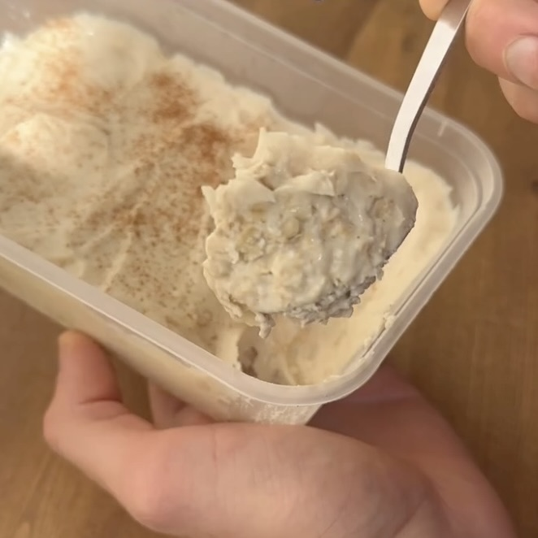

Cheesecake Avena y Canela
Ingredientes:
- 40g de avena
- 1 cucharada de proteína en polvo
- 50ml de leche de tu elección
- 200g de yogur natural sin grasa
- 1 cucharadita de canela
- 1 cucharadita (5ml) de extracto de vainilla
Instrucciones:
- 1. Añade 40g de avena y 50ml de leche en un frasco o recipiente. Mezcla bien y presiona en el
recipiente para formar una base.
- 2. Añade 200 g de yogur sin grasa a un bol junto con la proteína, el extracto de vainilla y la
canela. Mezcla hasta que todo esté bien combinado.
- 3. Coloca la mezcla de yogur sobre la base y alisa la parte superior.
- 4. Opcionalmente, espolvorea un poco más de canela por encima.
- 5. Pon una tapa y colócalo en el refrigerador hasta que esté listo para comer.
- 6. ¡Sirve y disfruta!